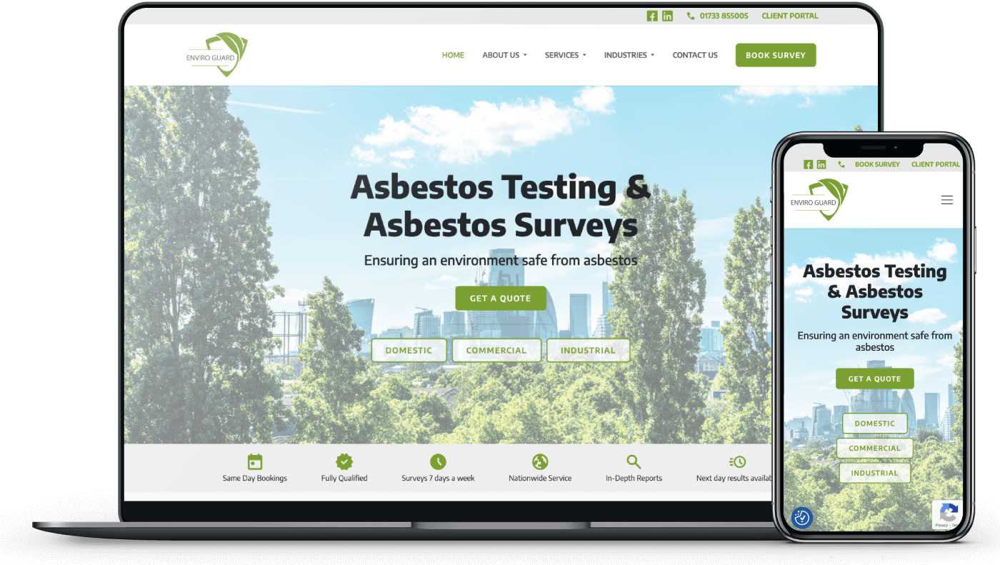

Case study
Bespoke Wordpress development
for national asbestos surveyors

Introduction
Enviro Guard National, a brand-new
business based in Stamford, Lincolnshire, specialising in asbestos surveying and management, approached me
with the vision of establishing their online presence from scratch. They aimed to create a modern website
to ensure a positive user experience, project professionalism, and align their online image with their
expertise in asbestos testing and management.
As a freelance developer, I was entrusted with building their website from the ground up. This case study
outlines the solution implemented and the outcomes achieved through our collaborative efforts.
Solution
I worked closely with the team at Enviro Guard to develop their website from the ground up. Through
extensive consultations and discussions, we outlined the technical requirements and functionalities needed
to achieve their vision.
Given Enviro Guard's status as a new business, we had the opportunity to
create a custom WordPress theme that was tailored precisely to their unique needs. This ensured a
user-friendly platform that highlighted their expertise in asbestos testing and management, as well as
allowed them to manage the content for their website autonomously.
Outcome
The collaboration between Enviro Guard and myself resulted in the successful launch of their website,
built from scratch.
By meeting the client's objectives and establishing their online presence, the
website positions Enviro Guard as a reliable partner in asbestos surveying and management from day one.
Visitors to the site can effortlessly access information about their services, the importance of asbestos
management, and the rigorous standards they adhere to.
In addition to the core website, we integrated
a blog section where Enviro Guard can share valuable insights and industry updates, further establishing
their authority in the field.
Enviro Guard now has a responsive, custom WordPress website that
reflects their commitment to safety, compliance, and expertise in asbestos testing and management. With a
fresh online presence, they are well-prepared to serve their clients and make a memorable impression in their industry.